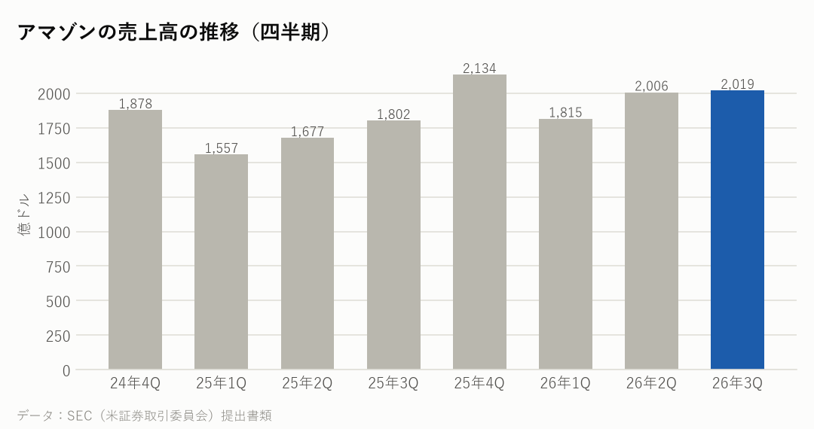
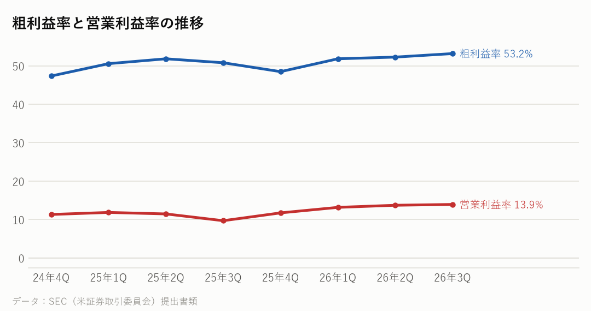
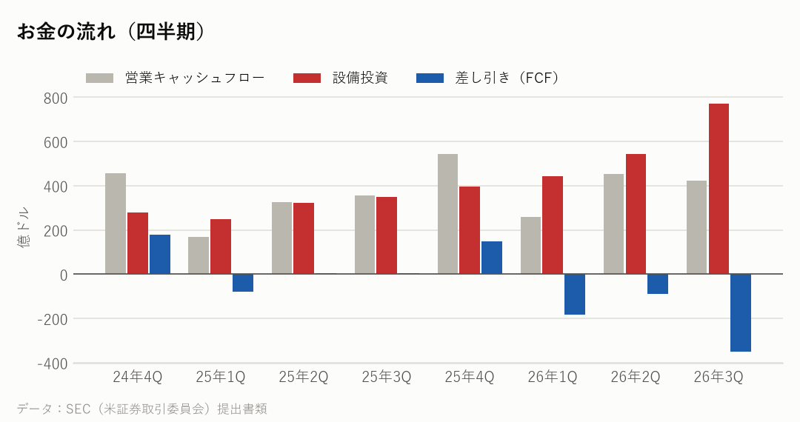
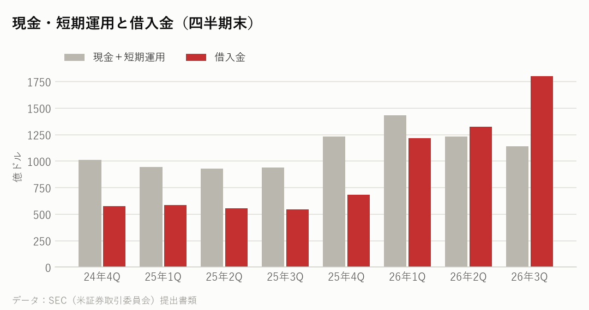
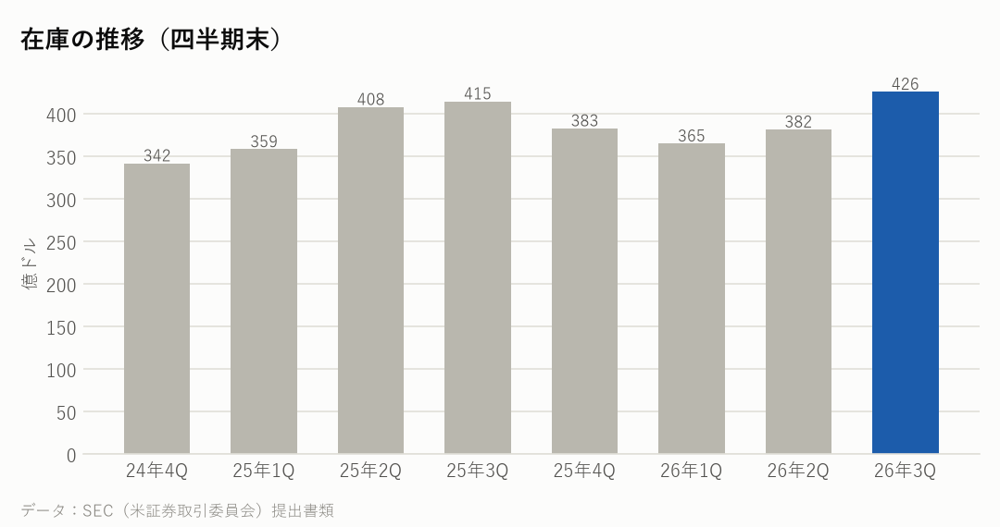

AMZN｜2026年7〜9月期の決算｜決算発表 2026年10月29日
アマゾンの決算：AWS 39%増で過去最高の利益率、設備投資は前年の約2.2倍
7〜9月期の売上高は前年同期比12%増の2,019億ドルだった。クラウドの AWS が39%伸び、営業利益率は13.9%と過去最高になった。一方、AIへの投資で設備投資は773億ドルと前年同期の約2.2倍にふくらみ、直近1年の差し引きのお金（FCF）は424億ドルのマイナスになった。
主な数字（2026年7〜9月期）
| 今回 | 前年同期 | 前年比 | |
|---|---|---|---|
| 売上高 | 2,019億ドル | 1,802億ドル | +12.1% |
| 粗利益率 | 53.2% | 50.8% | |
| 営業利益率 | 13.9% | 9.7% | |
| 純利益 | 207億ドル | 212億ドル | |
| 1株利益（希薄化後） | 1.89ドル | 1.95ドル |
部門ごとの売上
| 部門 | 売上 | 前年比 |
|---|---|---|
| 北米（通販など） | 1,129億ドル | +6.0% |
| 海外 | 431億ドル | +5.0% |
| AWS（クラウド） | 460億ドル | +39.0% |

会社の見通し（次の四半期）
| 売上高（10〜12月期） | 2,400億〜2,470億ドル |
|---|---|
| 営業利益（10〜12月期） | 285億〜335億ドル |
| 2026年の設備投資 | 約2,200億ドル |
| 広告の伸び（10〜12月期） | 10%台後半 |
- 10〜12月期の売上高は2,400億〜2,470億ドルで、前年同期より12〜16%増える見通し。営業利益は285億〜335億ドル（前年同期は250億ドル）を見込む。
- 2026年の設備投資は約2,200億ドルの計画を変えていない。
- 今年は Prime Day が4〜6月期にずれたため、7〜9月期の伸びは低めに出た。ずれを除くと、売上の伸びは約4ポイント高かったと説明している。
もうけの力

お金の状況



投資している分（出資の評価額）
| 未上場株などへの出資（帳簿上） | 1,437億ドル |
|---|---|
| 上場株への出資（時価） | ― |
| 合計 | 1,437億ドル |
| その他の損益（7〜9月期） | −7億ドル |
| その他の損益（1〜9月） | +684億ドル |
- 未上場の会社などへの出資は、帳簿上で1,437億ドル。主な出資先の一つが Anthropic で、Anthropic は2026年10月26日に上場の申請書（S-1）を公開した。
- 出資の評価益などを含む「その他の損益」は、1〜9月で684億ドルの利益、7〜9月期は7億ドルのマイナスだった。
大手クラウドの会社と比べると
各社の直近の四半期。在庫の日数は「在庫が売上原価の何日分か」。
| 会社 | 決算期末 | 売上高 | 前年比 | 粗利益率 | 営業利益率 | 設備投資/売上 | 在庫の日数 |
|---|---|---|---|---|---|---|---|
| アマゾン | 2026-09 | 2,019億ドル | +12.1% | 53.2% | 13.9% | 38.3% | 41日 |
| マイクロソフト | 2026-09 | 923億ドル | +18.8% | 67.8% | 49.8% | 42.7% | 6日 |
| アルファベット | 2026-09 | 1,276億ドル | +24.7% | 59.7% | 31.8% | 40.3% | 24日 |
| メタ | 2026-09 | 646億ドル | +26.1% | 79.3% | 20.1% | 52.5% | ― |
| オラクル | 2026-08 | 193億ドル | +29.6% | ― | 34.8% | 147.3% | ― |
NasdaqWhy の視点：データから読み取れる注目点
決算資料と各社の公式データを並べて読み取れることです。将来を予想するものではありません。
- AWS の営業利益は178億ドルで、会社全体の営業利益（281億ドル）の約6割を占める。売上の伸びは39%と、この5年近くで最も速い。CEO は、AWS の伸びが2027年・2028年とも40%を超えると見込んでいる（決算発表より）。
- 設備投資は773億ドルで、売上の約38%にあたる。直近1年の差し引きのお金（FCF）は424億ドルのマイナスで、投資の多くはAI向けだと説明している。
- 見通しの注意書きでは、結果を左右する要因の一つに「メモリーのチップの供給の変動」を挙げている。AWS は自社で設計したAI半導体の Trainium も使っており、メモリーの確保は AWS の設備投資とも関係する。
- 純利益が前年同期より少し減ったのは、前年同期に Anthropic への出資で95億ドルの利益があったため（決算発表より）。
- 広告の売上は196億ドルで、為替の影響を除き12%増。10〜12月期は10%台後半の伸びを見込む。
次に確認したい決算・予定
- エヌビディアの決算（11月下旬の見込み）：大手クラウドの投資が、AI半導体の売上にどう出ているか。
- アマゾンの次の決算（2027年2月初めの見込み）：2,400億〜2,470億ドルの見通しどおりか、AWS の伸びが続いたか。
- Anthropic の上場の日程：アマゾンの出資の評価にも関係する。
関連リンク
出典：アマゾン 決算発表（2026年10月29日）・四半期報告書（10-Q）、各社の SEC 提出書類
※情報提供のみ。投資判断はご自身でお願いします。※個人運営で、Nasdaq, Inc.とは無関係です。